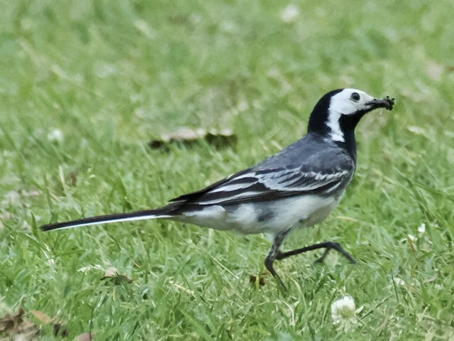
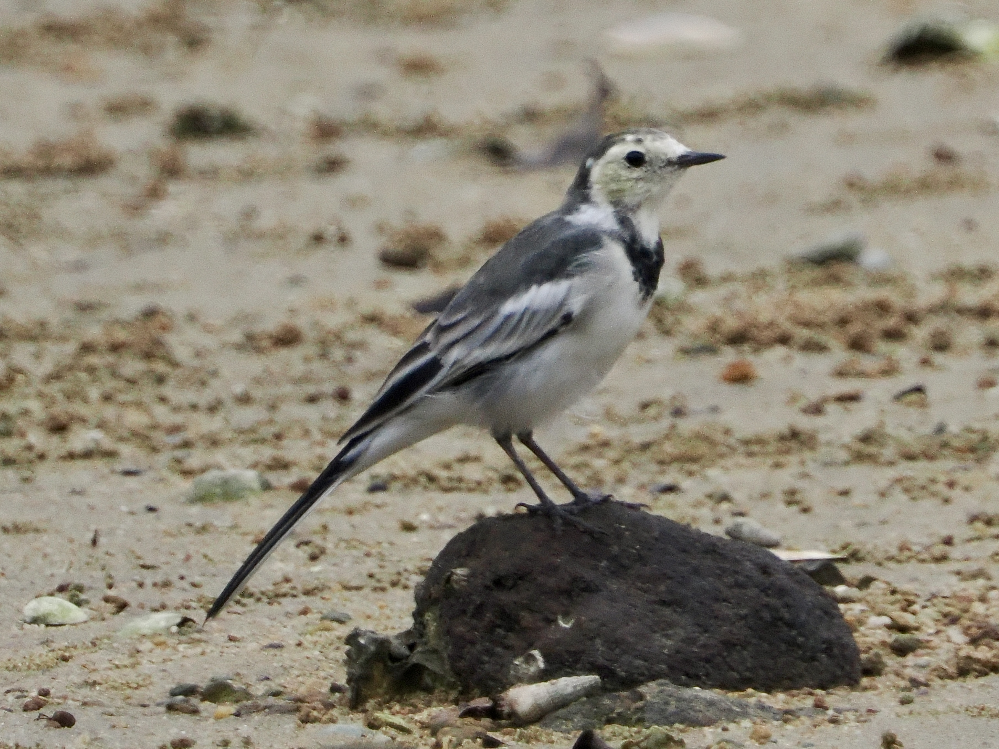

White Wagtail
Motacilla alba
Other names: Pied Wagtail
Order: Passeriformes
Family: Motacillidae

A monochrome wagtail that wags the tail continuously. Polytypic species, with each subspecies characterised by different amounts of black, white, and grey. Nominate subspecies alba is found in Europe, and has a black crown, black breast, and grey back.

Subspecies yarrellii is found in Great Britain and Ireland. Has a black back and the black of the breast extends to the neck. Also known as Pied Wagtail.

Subspecies leucopsis is found in East Asia. Has a black crescent on the breast.